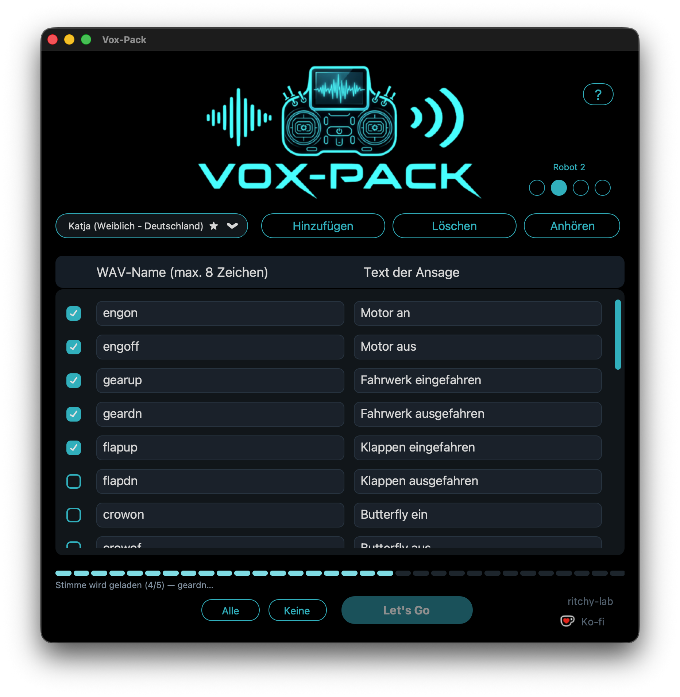

Vox-Pack
Geben Sie Ihrer Fernsteuerung eine Stimme.
Vox-Pack erzeugt die Ansagen, die Ihre EdgeTX-Fernsteuerung im Flug spricht: „Motor an“, „Fahrwerk ausgefahren“, „Timer gestartet“ … Sie wählen die Stimme, schreiben die Sätze, und die Anwendung erzeugt WAV-Dateien, fertig für die SD-Karte.

34 Stimmen
11 französische, 19 englische und 4 deutsche Stimmen, darunter die offiziellen von EdgeTX: Denise (★), Emily (★) und Katja (★).
System-Ansagen von EdgeTX
Die 186 SYSTEM-Ansagen auf Französisch (212 auf Englisch, 211 auf
Deutsch) mit der gewählten Stimme, in einem Ordner
SYSTEM/, fertig für die SD-Karte.
Roboterstimmen
Drei Punkte Roboter 1 bis 3 verändern die gewählte Stimme, und HAL 9000 setzt seine eigene durch. Kein Punkt markiert: die normale Stimme.
Pausen in der Ansage
Ein „>“ im Satz erzeugt eine Pause von einer halben Sekunde, „>>“ eine ganze. So verzögern Sie eine Ansage: „>>> Motor an“.
EdgeTX-Format
WAV mit 16 Bit, 32 kHz, mono — genau das, was die Fernsteuerung erwartet. Stille an den Enden entfernt, Pegel angehoben, wie bei den offiziellen Ansagen.
Für das Erzeugen der Stimmen ist eine Internetverbindung nötig (der Dienst von Microsoft). Die erzeugten Dateien bleiben auf Ihrer SD-Karte und funktionieren offline. Die Anwendung gibt es auf Französisch, Englisch und Deutsch.
Quellcode auf GitHub · MIT-Lizenz · macOS und Windows.
Fragen und Rückmeldungen: der Vox-Pack-Thread auf RCGroups — Antwort auf Englisch oder Französisch.